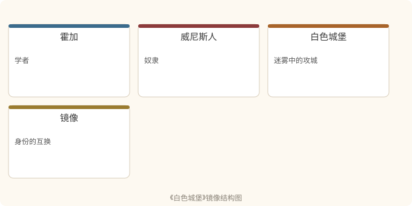

白色城堡
一、基本信息
| 作者 | 奥尔罕·帕慕克 |
|---|---|
| 成书/出版 | 1985年（作者页 B105 口径：白色城堡（1985）） Orhan Pamuk — Encyclopaedia Britannica（百科全书） |
| 国别/地区 | 土耳其 |
| 时代 | 现当代 · 20世纪 |
| 体裁 | 长篇小说 |
| 语言 | 土耳其语 |

《白色城堡》镜像结构图（主题·结构图）
二、创作背景
作者页（B105）：帕慕克 major_works 载'白色城堡（1985）'（B105 作者页定位，详见 wodemingshan 条核对）。
题材（通说待核）：威尼斯奴隶与奥斯曼学者霍加——镜像般的双身。
三、内容脉络
威尼斯奴隶成为霍加的替身——两人身份渐不可分（通说待核）。
'白色城堡'攻城：知识的自负与迷雾（通说待核）。
四、主要人物表
| 人物 | 身份 | 说明 |
|---|---|---|
| 霍加 | 学者 | 与奴隶互为镜像（通说待核） |
| 威尼斯人 | 奴隶 | 叙述者（通说待核） |
五、主题与艺术特点
- 东方与西方的镜像（通说）。
- 知识的迷雾（通说待核）。
- 身份的交换（通说）。
六、影响与评论
- 作者页：帕慕克早期成名作（B105 作者页口径）。
Orhan Pamuk — Encyclopaedia Britannica（百科全书） - 1990年英译后获国际声誉（通说待核）。
Orhan Pamuk — Encyclopaedia Britannica（百科全书）
七、阅读建议
难点
- 自传与虚构的互文。
- 奥斯曼科学史。
- 《白色城堡》（上海人民出版社，通说待核）。
- 土耳其文原版（Can Yayınları）。
先《白色城堡》后《我的名字叫红》。
八、待核实
- 1985年出版核对。
- 霍加/威尼斯人人名核对。
- 自传性（祖母说）待核。
本页主要来源
奥尔罕·帕慕克的其他收录作品：